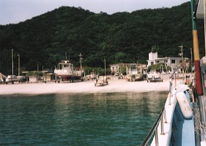
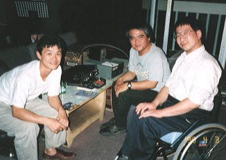
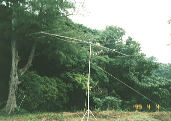
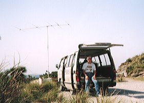
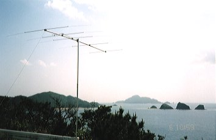
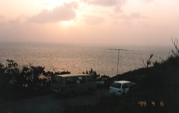
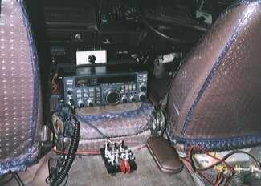
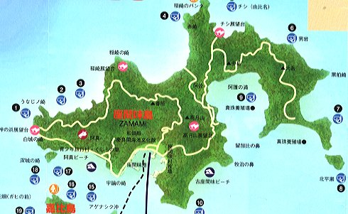

OKINAWA 1999
慶良間列島・座間味島

ZAMAMI OKINAWA(03.Apr-09.Apr'99)
ZAMAMI OKINAWA(03.Apr-09.Apr'99)
|
【沖縄へ移動】
サイクル23の上昇と共に入感し始めたインド洋方面のDXも、1エリアまではなかなか聞こえて来ません。
西日本では良く入感するVQ9(Chagos Is)も、深夜まで毎日ワッチしていても、オープンするのはJA2までで、
何故か1エリアには聞こえないのです。 【沖縄県・座間味島】
 今回運用地に選んだ座間味島は、沖縄県那覇市の西方約40キロの慶良間(ケラマ)列島にあります。 周囲約24Kmの座間味島は、沖縄でも有数のダイビングのメッカとして知られた場所です。 この島へは那覇市から毎日2便就航している高速船で55分と、思ったより便利なところです。透明度の高い座間味の海は、サンゴの美しさと、そこに生息する魚の豊富さでも知られています。 地元の人は"世界で二番目にきれいな海"と座間味の海を自慢します。 "世界で一番"と言わない謙虚なところが良い。 座間味島は小笠原(JD1)と同様、日本では数少ないホエールウオッチングのポイントとしても注目を集めていて、鯨の回遊時にあたる1-4月には、 豪快なザトウクジラのブリーチングを見物することができます。 私自身、自然溢れる座間味島に魅了され、通い続けてかれこれ10年近くなります。 ダイビングをするでもなく、 ただ珊瑚礁の海岸を散歩したり、白い浜辺に横になってノンビリ開放感を味わうのが、この島での過ごし方でした。 何度も訪れている座間味ですが"季節はずれ"の4月に出掛けたのは、今回が初めてでした。
この山で西方向がブロックされ民宿からアフリカ方面は狙えない
目的地の座間味島には行きつけの民宿もあり、乗り継ぎの手間さえ気にしなければ、 インド洋方面を狙う運用地としては最適の場所でした。 移動運用のため準備するRIGやアンテナは、海外で運用する時と同様のものを用意する本格的なものとなりました。 ただ、今回は国内移動なので、装備一式を前もって"宅配便"で送れるので気楽なものです。 【那覇市で聞く6m】
4月3日午後、那覇空港に到着。
座間味島行きの船の都合で出発は2日後の5日の朝の予定なので、
それまで那覇市内の旅館に滞在することになりました。
  JR6GVのシャックでEyeball QSO。中央はJR6GV・平良さん
"3B9R狙い"で那覇市に移動していたJM1KNQ、JQ3DUEの両局
【座間味島から運用】
5日の朝、2日間滞在した那覇市を出発、座間味島に向かいました。
春先の海はやはり荒れ模様で、夏場の穏やかな海面とは違って高速船は大揺れでした。
1時間弱の航海の後、目的地座間味島に到着。
  運用は駐車場に停めたワゴン車/6mのアンテナはRadixの5ele Yagi 南西方向の眺望はバツグン、眼下に広がる東シナ海
◎ 沖縄移動期間中に入感したDX局。
  晴れた時の女瀬(うなじの)崎からの夕日は美しい/運転席横のシートにセットされたFT-655
今回の移動では沖縄の皆さんに大変お世話になりました。 【座間味島の3地区】
座間味島は港のある中心部の「座間味」と北部の「阿佐」、南の「阿真」の3地区に分かれています。
島の中央には眺望の素晴らしい標高137mの高月山があり、慶良間内海に点在する島々や、粟国島、
渡名喜島、久米島が遠望でき慶良間随一の景勝地といった感。
夜にはここの展望台から、遠く那覇市の明かりを望む事も出来ます。
 運用場所は最西南端(左端)の女瀬(うなじの)崎
|